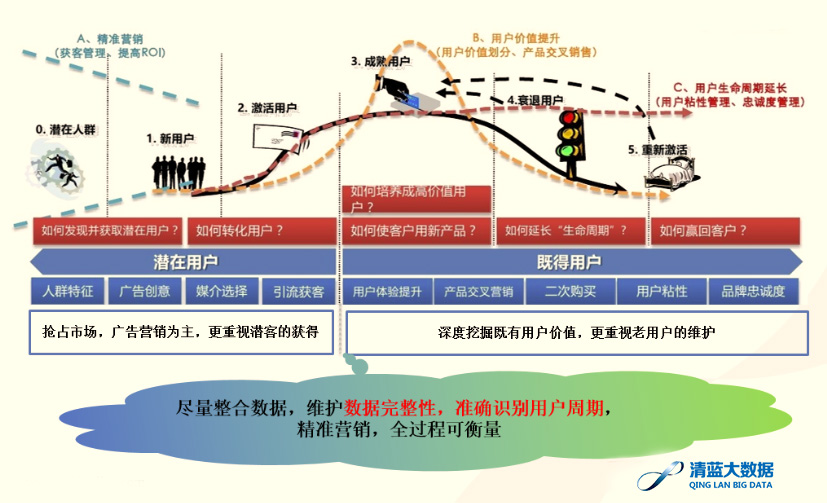
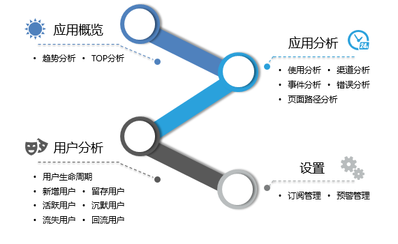
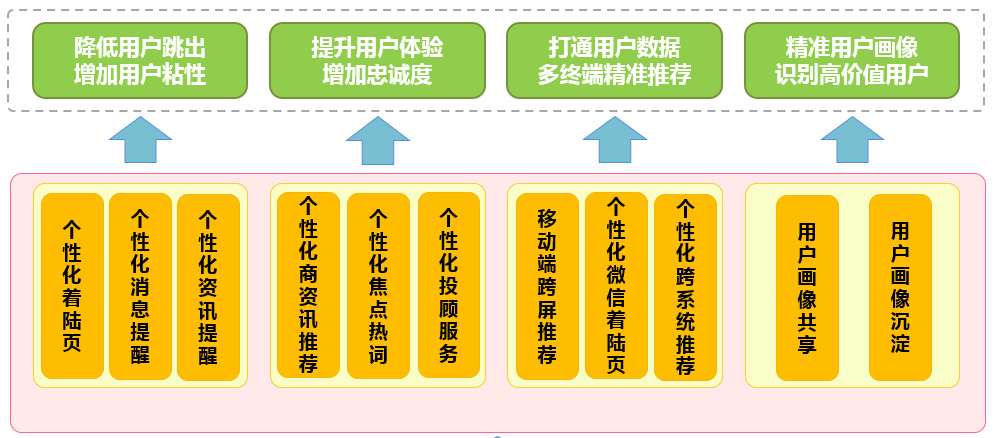
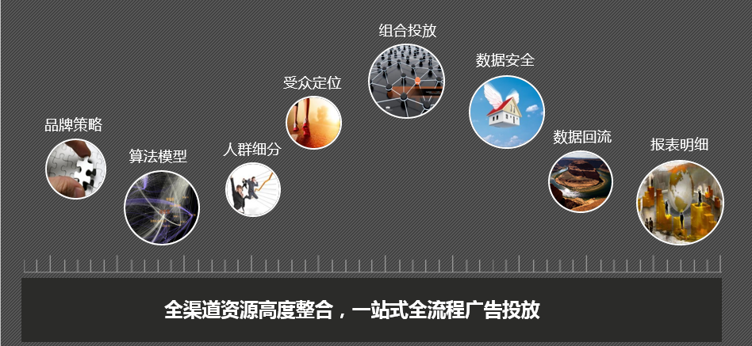
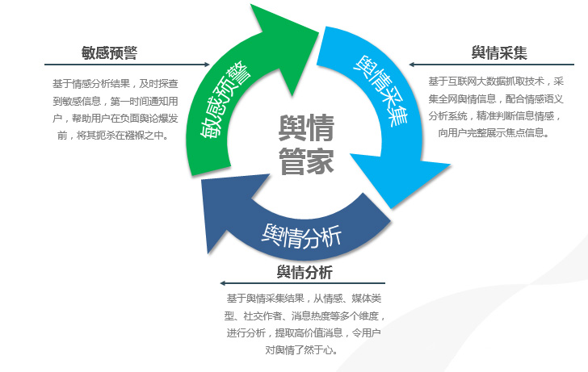

前言
随着互联网及移动互联网的高速发展，传统证券业也逐步走向市场化和网络化，行业在快速变化中也面临着激烈的竞争，一方面国家监管层面逐步放开管制，加强监督，鼓励创新。另一方面，证券行业内部各公司也在不断的与时俱进，从经纪、资管业务的网络化，到证券版银联的发展，再到个性化、移动化、社交化的客户服务。
证券公司要在这样竞争激烈市场中保持领先地位，需要在满足监管层合规审计的要求下，以客户为中心，对内深化运营和服务，提高现有客户体验和单客户价值；对外实时了解市场和上市企业等信息，加强跨界合作，对潜在客户精准定位和营销。
在这样背景下，数据成为券商提供内外竞争力的关键，只有及时准确地获得客户在内部和外部的交易、行为，媒体偏好，社交内容的信息数据，才能更好的了解客户，做好营销和服务，并不断优化产品设计和运营。
证券行业大数据问题及解决方案
1、 哪些数据需要纳入到大数据平台上来？
证券公司内部在经纪业务、资管业务、投行业务和自营业务中存在各个系统，例如股票交易系统、理财交易系统、用户开户系统、客服系统等。同时，在各个业务中又存在各种角色，如用户，上市公司、融资方、出资方、托管行等。这些角色在各个系统每时每刻都在产生着各种结构的数据，这些数据产生的不但数量大，类型多，速度快，而且可能会存在各个系统的不一致。
同时，在互联网高速发展的今天，和证券公司相关的各个角色也在无时无刻不在产生大量的网络数据，例如用户的购物行为、媒体资讯浏览等，上市公司的投融资、并购活动等。各业务形态也都在大的市场环境下受到影响，例如政策法规、国内外金融形势、重大事件等。
这些数据中哪些应该被纳入大数据平台呢，是根据最终的业务场景来决定，还是将所有能获取的数据全部纳入，深入挖掘，以数据说话呢？
清蓝大数据的大数据理念是数据标准化和分层接入。对目前和将来可获取的数据类型、来源进行充分调研和理解，制定统一的数据接入标准、结构化标准、归一化标准、挖掘标准，以实现很好的系统扩展性。根据业务需求、数据类型、范围、来源、采集技术、实时性要求等进行分层接入，尽量保证原始数据完整性，整合数据一致性和挖掘数据价值度。
2、如何进行跨渠道的用户生命周期运营管理？
移动端、PC端乃至类似Apple Watch等可穿戴设备都已成为用户数据触点。股票、投资理财、投顾服务等各个业务，涉及到交易、风控、清算等系统的数据都是用户在各个触点、场景下的痕迹，对这些数据进行拉通和分析，可以掌握用户在该券商所处的生命周期，从而可以有的放矢的。对用户进行针对性运营。

清蓝大数据采用代码潜入的方式，对用户在各个系统、各个触点的行为数据进行采集，分析其浏览、查找、存留、访问路径、事件深度、到达渠道等，进而对用户进行跨屏幕、跨应用、跨系统的生命周期分析。

3、如何通过产品、咨讯、投资建议的个性化推荐，提升用户体验，深挖用户？
面对越来越多的投资选择，用户的选择困难症凸现。如何让用户在最短的时间找到自己需要的产品、资讯乃至可靠的投资建议、选股建议呢？
建立在用户、产品、资讯、服务、市场充分了解的基础上，清蓝大数据强大的推荐引擎给用户提供实时的“千人千面”的跨屏、跨站的个性化产品资讯推荐和服务。

4、 如何快速精准的定位和营销新用户？
随着各大券商支付系统的对接和完善，其业务不断延伸到生活场景的支付，而且，其与时俱进的产品设计也与用户工作生活等场景密不可分。“把网民变股民”的战役中，用户在互联网的各场景触点成为竞争激烈的战场，只有买股票才被想起的券商将逐渐被淘汰。
清蓝大数据帮助证券客户利用第一方DMP平台，探知用户触点和渠道偏好，同时将DMP平台与清蓝大数据线上营销平台无缝对接。该平台已成功对接了各几十家DSP、SEM、EDM、SMS等线上代理渠道，可对其进行统一频控、投放规则、素材管理、监测和效果评估等。该平台的还为客户提供外部数据标签优化投放效果；与DSP数据对接，保护客户信息不泄露；并将潜在客户数据回流到第一方DMP这些数据服务。

5、 如何及时准确地感知市场，保持竞争力
市场舆情指数，重大事件预警等对证券公司来说是非常重要的信息。需要实时监控。
清蓝大数据有非常专业的舆情监控应用，数据来自于每天实时读取的上万家新闻媒体网站的资讯内容。通过对这样数据的热点分析、敏感词分析、舆情指数、A股新闻热度择时指标NQ等计算，实时提供市场舆论监控。
